This document covers the core trading functionality of the Signal trading system, including the three-stage AI decision pipeline, signal generation and validation, position management, risk assessment, and execution components. This page provides an architectural overview of how trading decisions are made and executed.
For detailed AI agent consultation capabilities, see Agent System Reference. For configuration and deployment details, see Configuration and Deployment. For mathematical analysis specifics, see Mathematical Analysis Services.
The trading system employs a sophisticated three-stage AI pipeline that processes market data through specialized services to generate, validate, and execute trading decisions. The architecture consists of AI decision engines, mathematical analysis services, validation layers, and execution components that work together to automate cryptocurrency trading.
The core components include:
SignalOutlineCloseOutlineRiskOutline
The pipeline operates with dynamic Time-To-Live (TTL) intervals:

The architecture employs dependency injection through a container system that binds services and ensures loose coupling between components. The TYPES constant defines service identifiers used throughout the system.
The signal generation process begins with RiskAutoService evaluating market conditions every 15 minutes. If conditions are favorable (action: "trade"), SignalAutoService activates with dynamic TTL intervals. The SignalOutline analyzes multi-timeframe data using mathematical services and generates trading recommendations.
Key validation steps include:
SignalValidationServiceSettingsConnectionServiceOnce a position is opened via SignalCoreService.commitBuySignal(), CloseAutoService begins monitoring with adaptive TTL intervals based on P&L momentum:
The CloseOutline specializes in scalping-oriented early closure on reversal signals, particularly in bearish market conditions.
Six specialized mathematical services provide comprehensive technical analysis:
| Service | Timeframe | Specialization | Data Window |
|---|---|---|---|
ShortTermMathService |
15-minute | Scalping | 144 candles (36 hours) |
SwingTermMathService |
30-minute | Swing trading | 96 candles (48 hours) |
LongTermMathService |
1-hour | Position trading | 48 candles (48 hours) |
VolumeDataMathService |
Variable | Support/Resistance | 220/96 hourly candles |
SlopeDataMathService |
1-minute | Momentum analysis | 120 candles (2 hours) |
WhaleDetectionMathService |
5-minute | Institutional activity | 72 candles (6 hours) |
Each service calculates specific technical indicators optimized for its timeframe and trading strategy.
The system implements sophisticated feature flag architecture with guaranteed consistency between UI controls and backend business logic. Configuration is managed through SettingsConnectionService with Redis-based persistent storage.
The configuration system uses bidirectional transforms between user-friendly UI controls and backend boolean flags, ensuring no configuration conflicts.
The execution pipeline integrates with external systems through WebhookService for order execution and TelegramWebService for user notifications. Each trading event triggers specific notification sequences based on feature flag settings.
The TelegramWebService implements six notification methods corresponding to different trading events:
All notifications include markdown formatting for professional presentation of trading data and P&L information.